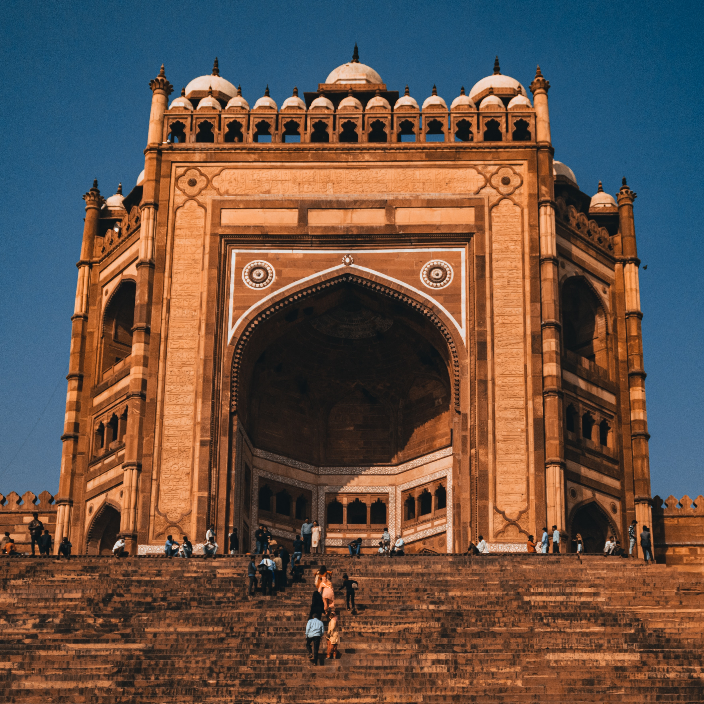

TOP RECCOMENDATIONS



Something more than Taj is waiting
A true wonder of the world
TAJ MAHAL
The Taj Mahal is considered to be the greatest architectural achievement in the whole range of Indo-Islamic architecture. Its recognised architectonic beauty has a rhythmic combination of solids and voids, concave and convex and light shadow; such as arches and domes further increases the aesthetic aspect. The colour combination of lush green scape reddish pathway and blue sky over it show cases the monument in ever changing tints and moods. The relief work in marble and inlay with precious and semi precious stones make it a monument apart. The uniqueness of Taj Mahal lies in some truly remarkable innovations carried out by the horticulture planners and architects of Shah Jahan. One such genius planning is the placing of tomb at one end of the quadripartite garden rather than in the exact centre, which added rich depth and perspective to the distant view of the monument. It is also, one of the best examples of raised tomb variety. The tomb is further raised on a square platform with the four sides of the octagonal base of the minarets extended beyond the square at the corners. The top of the platform is reached through a lateral flight of steps provided in the centre of the southern side. The ground plan of the Taj Mahal is in perfect balance of composition, the octagonal tomb chamber in the centre, encompassed by the portal halls and the four corner rooms. The plan is repeated on the upper floor.
(For specific location:Check Location )

AGRA FORT
Agra Fort is a historical fort in the city of Agra in India. It was the main residence of the emperors of the Mughal Dynasty till 1638, when the capital was shifted from Agra to Delhi. The Agra fort is a UNESCO World Heritage site.It is about 2.5 km northwest of its more famous sister monument, the Taj Mahal. The fort can be more accurately described as a walled city. After the First Battle of Panipat in 1526, the victorious Babur stayed in the fort, in the palace of Ibrahim Lodi. He later built a baoli in it. His successor, Humayun, was crowned in the fort in 1530. He was defeated at Bilgram in 1540 by Sher Shah Suri. The fort remained with the Suris till 1555, when Humayun recaptured it. Adil Shah Suri’s general, Hemu, recaptured Agra in 1556 and pursued its fleeing governor to Delhi where he met the Mughals in the Battle of Tughlaqabad. Sheesh Mahal, Agra Fort:The effect produced by lighting candles in Sheesh Mahal, Agra Fort. Realising the importance of its central situation, Akbar made it his capital and arrived in Agra in 1558. His historian, Abul Fazl, recorded that this was a brick fort known as ‘Badalgarh’. It was in a ruined condition and Akbar had it rebuilt with red sandstone from Barauli area Dhaulpur district, in Rajasthan. Architects laid the foundation and it was built with bricks in the inner core with sandstone on external surfaces.
( For specific location:Check Location )

BULAND DARWAZA
Buland Darwaza or the loft gateway at Fatehpur Sikri was built by the great Mughal emperor, Akbar in 1601. Akbar built the Buland Darwaza to commemorate his victory over Gujarat. The Buland Darwaza, approached by 42 steps and 53.63m high and 35 meters wide, is the highest gateway in the world and an astounding example of the Mughal architecture. It is made of red and buff sandstone, and decorated by carving and inlaying of white and black marble. An inscription on the central face of the Buland Darwaza throws light on Akbar's religious tolerance and broad mindedness. The Buland Darwaza towers above the courtyard of the mosque. It is semi octagonal in plan and is topped by pillars and chhatris, echoing early Mughal design with simple ornamentation, carved verses from the Koran and towering arches. There are thirteen smaller domed kiosks on the roof, stylized battlement and small turrets and inlay work of white and black marble. On the outside a long flight of steps sweeps down the hill giving the gateway additional height. A Persian inscription on eastern arch way of the Buland Darwaza records Akbar's conquest over Deccan in 1601 A.D.
(For specific location:Check Location )
TAJ HOTEL AND CONVENTION CENTER
Situated on 4.5 acres of land just 1 km from the Taj Mahal, Taj Hotel & Convention Centre Agra features a health club with infinity pool and spa, as well as 5 dining options. Air-conditioned rooms come with free WiFi and a flat-screen TV. Featuring wooden flooring and earth tones, rooms at Taj Hotel & Convention Centre Agra are equipped with a minibar, tea/coffee-making facilities and en suite bathroom. 24-hour room service is available. Guests can work-out at the fitness centre, which is located next to the swimming pool and features a steam room and hot tub. A range of therapies and beautifying treatments are available at the Aliva spa. Transportation arrangements can be organised at the travel desk.

ITC MUGHAL
Set amidst 23 acres of lush greeneries, ITC Mughal Agra boasts luxurious accommodation. Guests can lounge by the spacious outdoor pool or choose between 4 dining options. Located just 3 km away from the historical Taj Mahal and Agra Fort, the hotel is also 6 km from Agra Railway Station. Indira Gandhi International Airport is 250 km away with Airport shuttle services available at a surcharge. Elegantly furnished rooms are fitted with air-conditioning, a sofa seating area, a flat-screen TV, a minibar and tea/coffee making facilities. En suite bathrooms include shower amenities and free toiletries.
COURTYARD BY MARRIOT
Offering an outdoor swimming pool, a fitness centre and a spa and wellness centre, Courtyard Marriott Agra is located in Agra. It also has 4 dining options. The UNESCO World Heritage Site of the iconic Taj Mahal is 3.8 km. Each air-conditioned room here will provide you with a flat-screen satellite TV and a minibar. Featuring a bath or shower, private bathroom also comes with a hairdryer and bathrobes. At Courtyard Marriott Agra you will find a 24-hour front desk, games room and a garden. Other facilities offered at the property include luggage storage, meeting/banqueting space and laundry. The property offers free parking. Guests can enjoy four dining options at the property - MoMo Cafe, Anise, Onyx and MoMo 2 Go. The hotel is 6.3 km from the UNESCO World Heritage Site of Agra Fort, 10.5 km from the Mehtab Bagh and Tomb of Itimad-ud-Daulah. The Agra Cantonment Railway Station is 8.4 km and the Agra Airport is 1.9 km away.
THE GRAND IMPERIAL-HERITAGE HOTEL
Situated in the heart of medieval Agra, Grand Imperial, a heritage hotel offers luxury accommodation with spa facilities, conference facilities and beautiful gardens, ideal for business and leisure travellers. The elegant suites are decorated in rich colours and fabrics and antique furniture. The historic charm of the suites is complemented with modern amenities. Guests can enjoy their complimentary breakfast in the hotel’s charming restaurant, which also serves traditional Indian, Chinese and continental cuisine. For relaxation, guests can enjoy a refreshing dip in the swimming pool. Afterwards, they can pamper themselves at the Grand Imperial’s health club and spa. Quality conference facilities are also available for business meetings and functions.